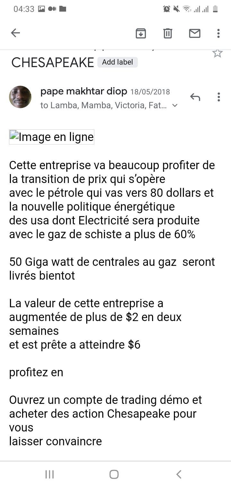

Feb 1, 2021
Gamestop, social influence in the stock market
Years ago, when I was still working in ai driven algorithmic trading models, I knew orders spoofing and how they were spoiling institutional investors. US regulators had discovered this issue of financial stock markets and came up with reg NMS for fixing it. With the emergence of social trading platforms and stock discussion platforms like StockTwits, hedgeco, cashcode… I thought that spoofing could still be done by someone who has the tech traction power to influence people online using such platforms. And I really tried to experiment with that by sending mass emails to people about a financial opportunity that was real, unlike this one I am talking about. I thought that the only fact of sending an email, this email

To all of my contacts could in turn influence the trend of the stock and I do believe that I did because I had some major financial players in my contacts sure not at the level of Elon musk and ones of this Reddit group. The bubble I saw and I was telling them was true and right there for them to see and I do believe that some of these big players made high volume investments that made the stock price goes higher because of what we call in the financial market the volume of order impact. This impact is very well studied by a serious investor and there several algorithms designed to reduce it. When you are a market maker or design a stock market-making platform like what I did, you could not ignore such an order impact optimization algorithm. If you can influence an institutional fund to trade 500000 shares in a given trading day and you know well the size of the order, how this order is sliced and distributed among the marketplace where this fund trades, and how they will make the stock price move you can make money with this social influence. I am not this kind of man so tested, I discovered and Think I could never run a long-lasting business with this bad behavior.
This article was titled Gamestop anatomy of a stock bubble
Because that’s what I was supposed to write about a deep analysis to show how this GameStop bubble happened but it ended behind this rant but it, not a selfish article for just talking about me. I will take time to write the anatomy of a stock bubble but I can tell you right now that affiliate marketing has something to do with this bubble